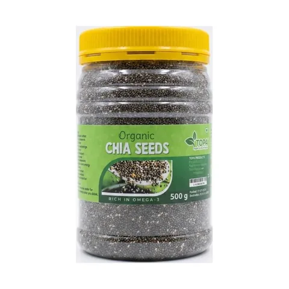
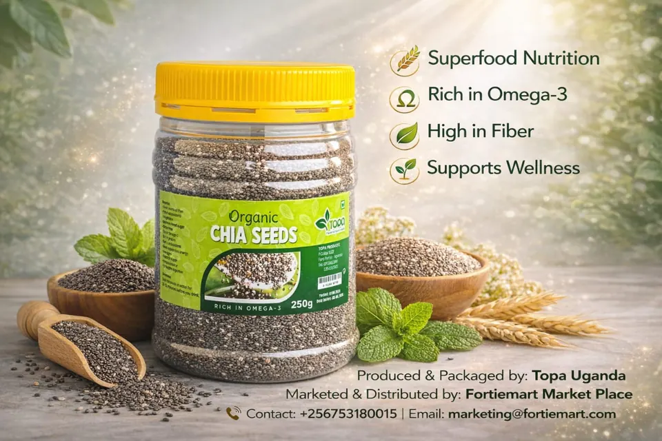
Superfoods
Organic Chia Seeds
Superfood nutrition: rich in omega-3, high in fibre and the heart of our Chia for Brain Capital initiative.
100 g200 g250 g500 g
Enquire 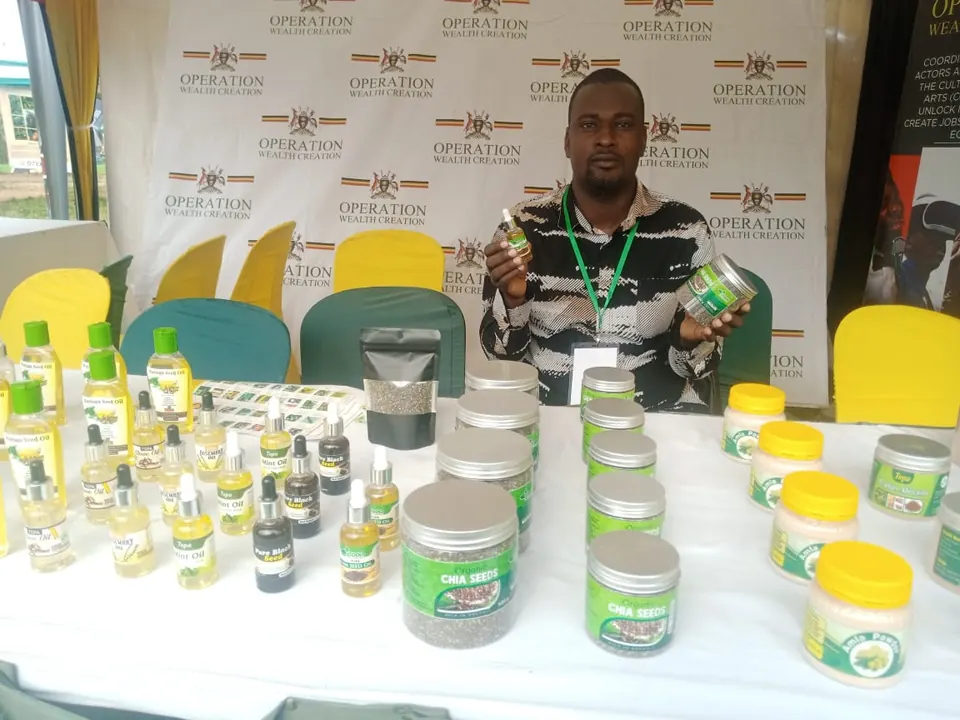
Organic products
Grown by our member farmers, then processed and packaged by TOPA Uganda. Superfoods, oils and body care for homes, retailers and export buyers.


Superfood nutrition: rich in omega-3, high in fibre and the heart of our Chia for Brain Capital initiative.
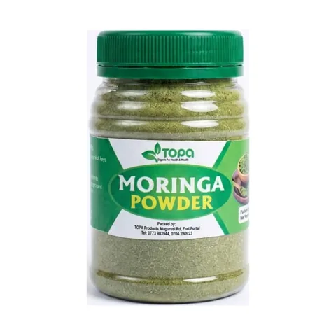
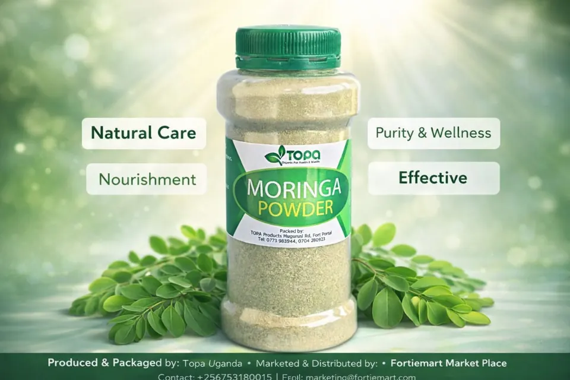
Finely milled moringa leaf, packed in Fort Portal, for natural nourishment and everyday nutrition.
Enquire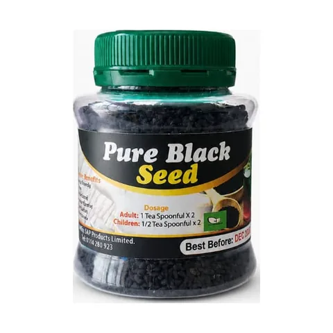
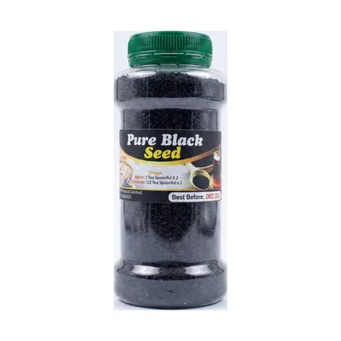
Whole black seed (Nigella sativa), a traditional wellness staple for adults and children.

A natural remedy rich in antioxidants that supports the immune system and overall wellness.
Enquire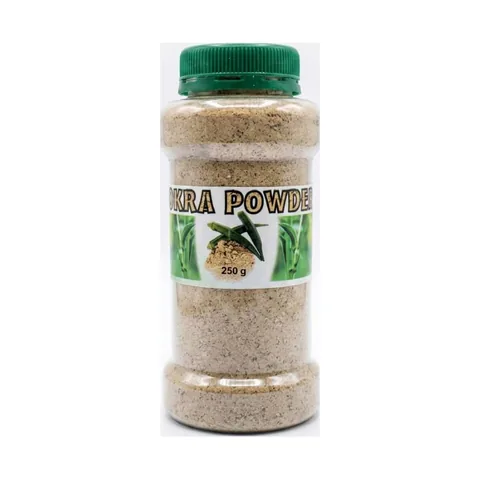
Dried, finely ground okra: a versatile, fibre-rich addition to soups, sauces and smoothies.


A natural, unrefined sweetener that keeps its minerals and comes from an eco-friendly source.
Enquire

Pressed from farmer-grown castor seed. Natural care and purity for wellness and nourishment.
Enquire
Naturally nourishing, effective for hair care, with skin and wellness benefits.
Enquire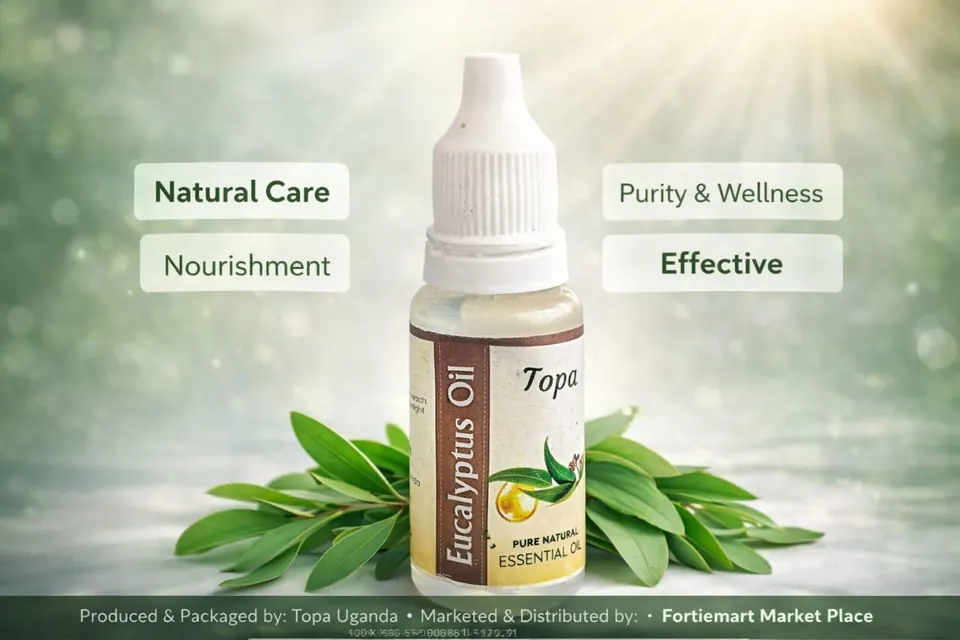
Pure eucalyptus essential oil for natural care, purity and wellness.
Enquire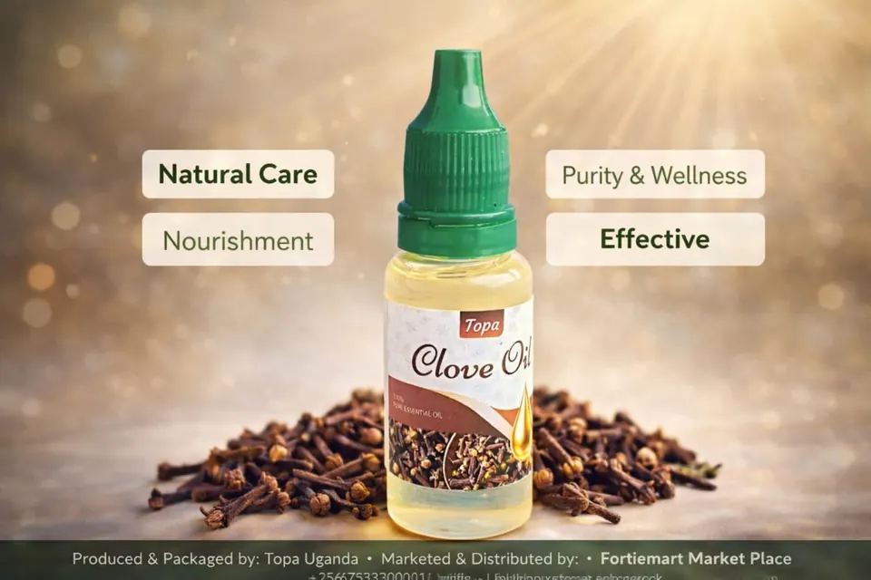
Aromatic clove oil, packaged by TOPA for natural care and nourishment.
Enquire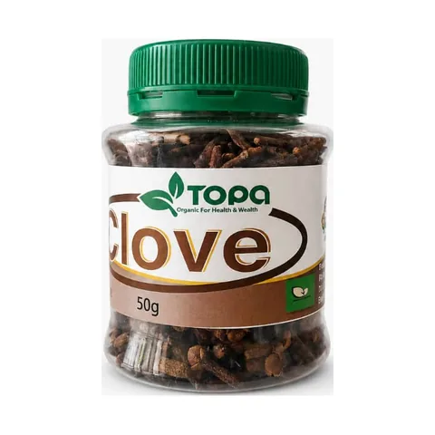
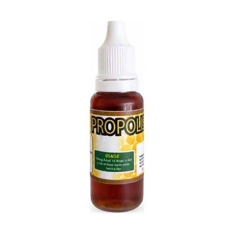
Natural bee propolis extract in a dropper bottle. Take a few drops in warm water, as directed on the label.
Enquire
A traditional blend of Mimosa pudica, oregano, thyme and peppermint for digestive comfort. Follow the label dosage.

Rich, natural shea butter care oil for soft, nourished skin.
EnquireProduced & packaged by Topa Uganda. Marketed & distributed by Fortiemart Market Place (+256 753 180015). Product information is for general wellness only and is not medical advice.
The chia range
Grown by Rwenzori farmers and packed in Fort Portal, from a 100 g starter jar to a 500 g family pack.
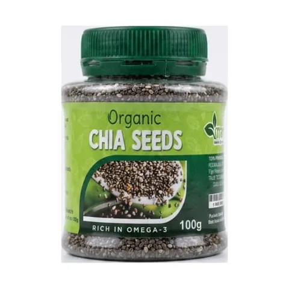
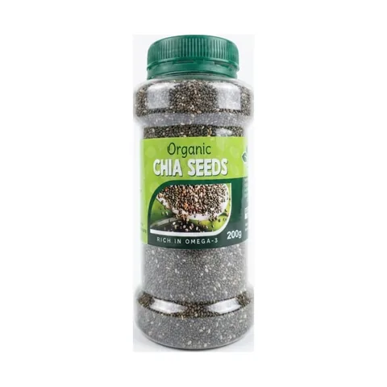
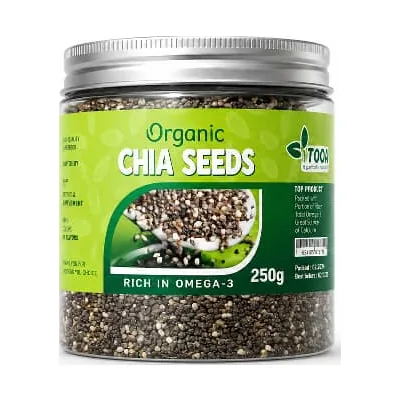
For buyers & exporters
We supply processors, distributors and international buyers with traceable organic raw materials and essential oils. Samples have reached Europe and the Americas, and we are now focusing on the UAE.

Farmers, investors, donors, researchers and buyers: there is a place for you in Uganda’s organic transformation, including our new Chia for Brain Capital initiative.